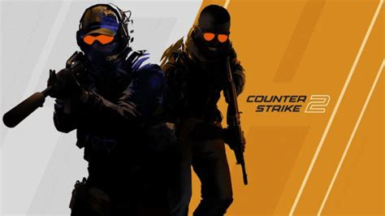

cs2
更新时间 9999 来源：valve
Valve officially released Counter-Strike 2, its sequel/free upgrade to Counter-Strike: Global Offensive, on Wednesday. The game was previously only available to players of CS:GO as part of a limited technical test. Counter-Strike 2 replaces CS:GO on Steam. Valve calls the updated game “the beginning of an exciting new chapter and the largest technical leap in Counter-Strike’s history.” CS:GO players won’t be left behind; all items from CS:GO move forward to CS2, Valve promises. Like CS:GO, Counter-Strike 2 is free to download and play. Valve announced Counter-Strike 2 in March, promising an “overhaul to every system, every piece of content, and every part of the [Counter-Strike] experience.” The announcement showed off Counter-Strike 2’s new features, including updated maps, dynamic smoke grenades, and “sub-tick updates,” which Valve says offer even more precise server updates.
